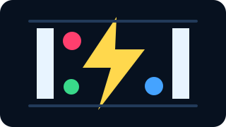
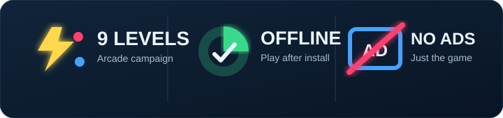

Instant play
The demo remains playable without registration. Opening the game should lead to play—not paperwork.

Lightning Pongv0.2 closed alpha · Android
Lightning Pong is a fast, colorful arcade challenge built around split-second saves, PX progression, and nine increasingly unruly levels.

PX / MOMENTUM
Play in your browser
A free three-level challenge is coming to this site. Jump straight into the arena without an account, then decide whether you want a Player Passport to carry your progress forward.
The demo remains playable without registration. Opening the game should lead to play—not paperwork.
Race for the fastest clear—or prove your control by winning with the lowest PX spent. Different styles, equal bragging rights.
An optional Player Passport will let you save progress, request alpha access, and submit your best runs for review.
Three handcrafted levels, instant play, and a clean restart whenever you want another shot at your best score.
Your optional player identity
Play first. If you want to keep your progress or join the community, create a private Player Passport later. Invitations will open gradually while we make sure every choice is clear.
✓ Choose Google or an email magic link
✓ Decide separately whether scores go public
✓ Keep playing without creating a profile
✓ Export or delete your account when controls open
Preview your Player PassportYour road into the arena
Play all nine current levels offline and help find the moments that need one more spark of polish.
Visit this page, enter the arena, and chase a better run—no installation or account required.
Save progress across sessions, request alpha access, and choose whether your approved scores join the leaderboard.
Built in public, released with care
Android first. Browser next. Your progress should move only when you ask it to.